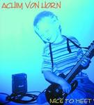

| Artist: | Achim von Horn |
| Title: | Nice To Meet Ya |
| Label: | Red-Art 002-2001 |
| Length(s): | 48 minutes |
| Year(s) of release: | 2001 |
| Month of review: | [02/2003] |
Sample this album in MP3 or RealAudio
It is not all heavy and/or fast guitars though, as exemplified by Touch My Soul which opens slowly, melodically. A sensitive track, but also bordering on the mellow. Heavy Tools is melodically too weak, although rhythmically it tends to be more varied. The keys are rather thin sounding here. Cosmical is a longer track (just over six minutes), which in places reminds me of Jan Hammer (the later one). Plenty of variation featuring both mood, atmosphere, melody, up-beat parts, a good drive and incidental percussion.
Muffle's Shuffle brings back the heavy groove, but it lacks a spark of identity: this has been so often already. Riffs approach the later King Crimson, but without the spunk. Devil's Meetin might sound a bit like Attention Deficit in places, but I often do not see in the sense in the music. Where is it all going? Etrernal Dance is again a longish one and after an anthemic opening, well it turns out to be both a bit jazzy as well as meandering.
When we arrive at Sunset, I get bored with the music: too uneventful, too sentimental. In the title track the vitality comes back a bit, but all in all the music is too straightforward to warrant my attention. On Happy Metal shows his chops, but in the end that is all that is done. Universe shows that one aspect that I have been missing in the last few tracks are the keyboards which bring in a bit of bombast. I am thinking a bit of Ravel in the first part. Then we get more pace and bounce, as we move into Arabic territory again (think back to the opener). There is a certain sharpness here, a meandering quality as well. The up-tempo ending is busy, but streamlined.
All in all, an album which is limited in its outlook and in my case limited in its appeal, especially since it is progressive we are after on this site. on: Command not found.